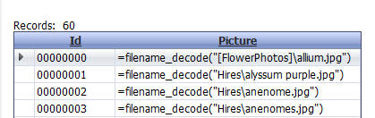
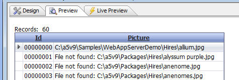

How to Debug Image File Reference Images Not Displaying Correctly
If you have built a Grid that contains Image File Reference fields, and the images are not displaying when you run the Grid, this topic can help you find the problem.
Normally, for an Image File Reference field, the display format in the Field Properties is set to <Image File Reference Field>.
Two special display formats are supported to help you debug. These are
- <Image File Reference Field Filename Raw>
- <Image File Reference Field Filename>
In the image shown below, the display format is set to <Image File Reference Filename Raw>
This shows the raw (un-encoded) filename for the image.
As you can see only the first record has an alias name in the image.

In this next example, the display format is set to <Image File Reference Filename>
This shows the decoded filename for each image.
Only the image in the first row was found. That's because the image name used an alias ([FlowerPhotos]) and this alias was defined in the Web Publishing Profile.
Because the image filenames in records 2 and onwards did not use an alias, the filename was decoded at runtime somewhat randomly and the decoded file does not exists.

In order to get this example to work, the image filenames need to be fixed. An xbasic program can be written to loop through all of the records and 'fix' the filenames by using a filename that is encoded with an alias.
t = table.open("flowers")
dim fn as c
while .not. t.fetch_eof()
fn = t.picture
if atc("[FlowerPhotos",fn) = 0 then
fn = word(fn,2,"\"")
fn = "[FlowerPhotos]" + chr(92) + file.filename_parse(fn,"ne")
fn = "=filename_decode(" + quote(fn) +")"
t.change_begin()
t.picture = fn
t.change_end(.t.)
end if
t.fetch_next()
end while
t.close()
Debugging Image File Reference Fields in a Report
Say your Image File Reference Field name is 'image'.
Create two calculated fields as follows:
folder = image
fn = eval( substr(image,2) )
Place these calculated fields on your report and make sure that you set the display width of the field to be large enough to display the full size of the field.
The 'calc->folder' calculated field will show the encoded filename of the image. The 'calc->fn' calculated field will show the actual (un-encoded) filename.
See Also
How to Debug Image File Reference Fields